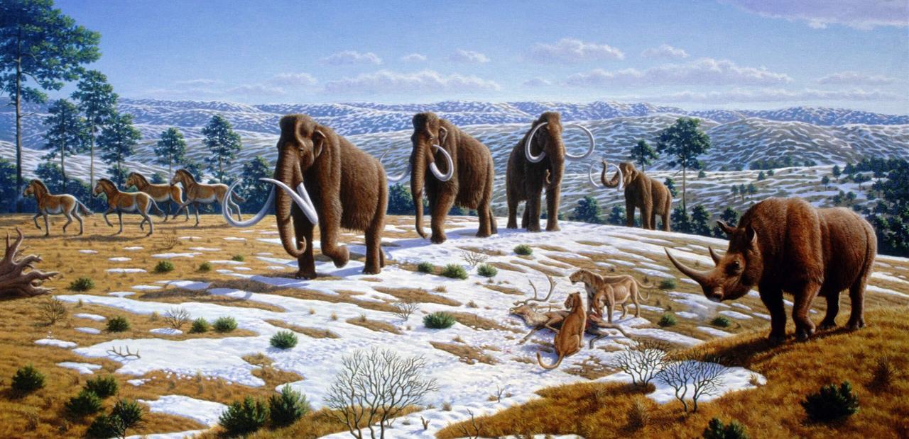
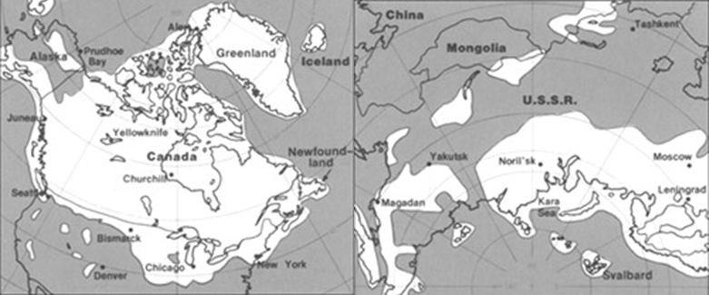

Wikipedia: Mauricio Anton
El Pleistoceno o mejor conocido como edad de hielo, es junto al Holoceno una subdivisión del Cuaternario. Duró entre 2,59 millones de años hasta hace 11.700 años. Se caracteriza por abarcar las ultimas glaciaciones. Los principales cambios en a fauna de mamiferos ocurrieron Durante las últimas glaciaciones y períodos interglaciares, con la extinción de la megafauna del Pleistoceno.

Durante la última Edad de Hielo (hace ~110,000 a 10,000 años), México fue un refugio tropical de extraordinaria biodiversidad y megafauna, a menudo descrito como un "Serengueti" prehistórico. Con climas más fríos y secos, el territorio albergó mamuts de Columbia, mastodontes, perezosos gigantes, camellos, caballos nativos y depredadores como el diente de sable.
Glaciares

Durante el Pleistoceno grandes extensiones de tierra se cubrieron con una inmensa capa de hielo, fenómeno denominado glaciación. En algunos períodos se redujo el tamaño de las capas de hielo y el clima se hizo más cálido. Estos períodos se denominan interglaciares. En el último millón de años, los principales períodos glaciares en Europa fueron cuatro y reciben los nombres de cuatro afluentes del Danubio, en los que, por primera vez, fueron identificados sus depósitos: Günz, Mindel, Riss y Würm (la más reciente). En Norteamérica las glaciaciones se denominan Nebraska, Kansas, Illinois y Wisconsin respectivamente. Con la reciente inclusión del Gelasiano dentro del Pleistoceno, se incluyeron dos nuevas glaciaciones Donau y Briggen.
Museos del Pleistoceno en México
Museo del Mamut en el AIFA (Aeropuerto Internacional Felipe Angeles, Estado de México)

En el interior el área de exhibición cuenta con 5 salas temáticas permanentes y una sala de exposiciones temporales:
- Origen de la cuenca de México
- Mamut colombino
- Jardín temático
- Sendero de la fauna del pleistoceno
- Fósiles de grandes mamíferos
- Proceso de conservación paleontológica
Se exhibe una maqueta con los animales que habitaron la zona en el período pleistoceno
Museo de la Paleontologia de Guadalajara (Jalisco)


El Museo de Paleontología de Guadalajara abrió sus puertas el 14 de febrero de 2000. Presenta una muestra importante de la megafauna pleistocénica del centro occidente de México, y es el resultado del trabajo de varias décadas del ingeniero Federico A. Solórzano Barreto. El concepto museográfico fue diseñado por los especialistas Roberto Cuétara y Óscar J. Polaco.
Likes: 0